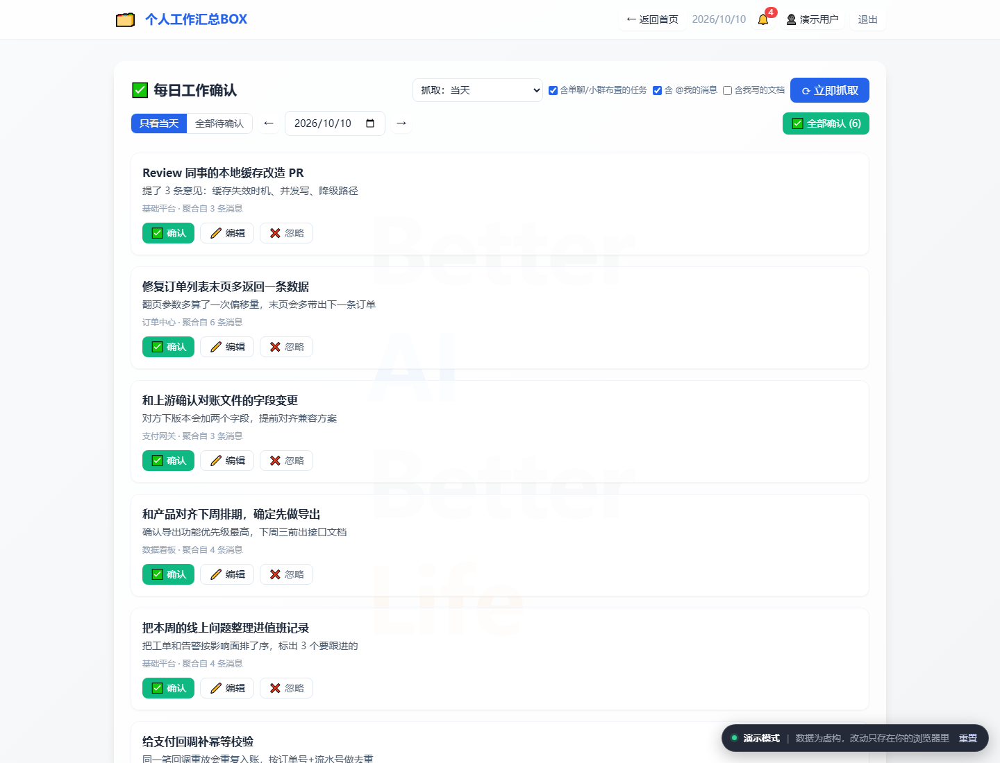
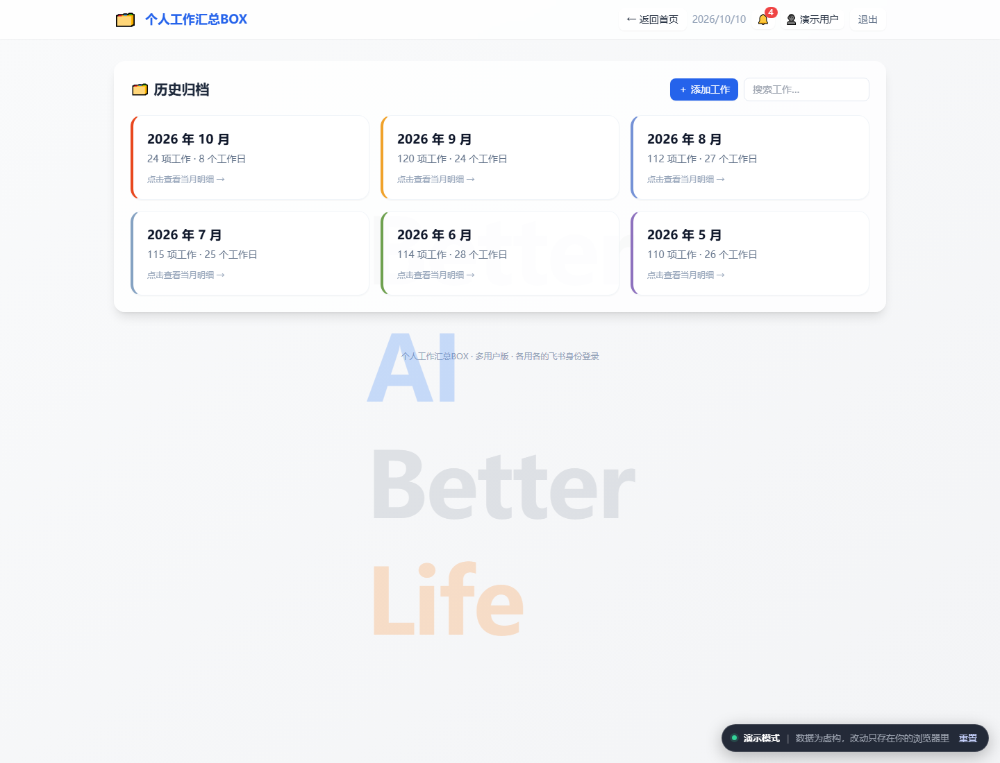
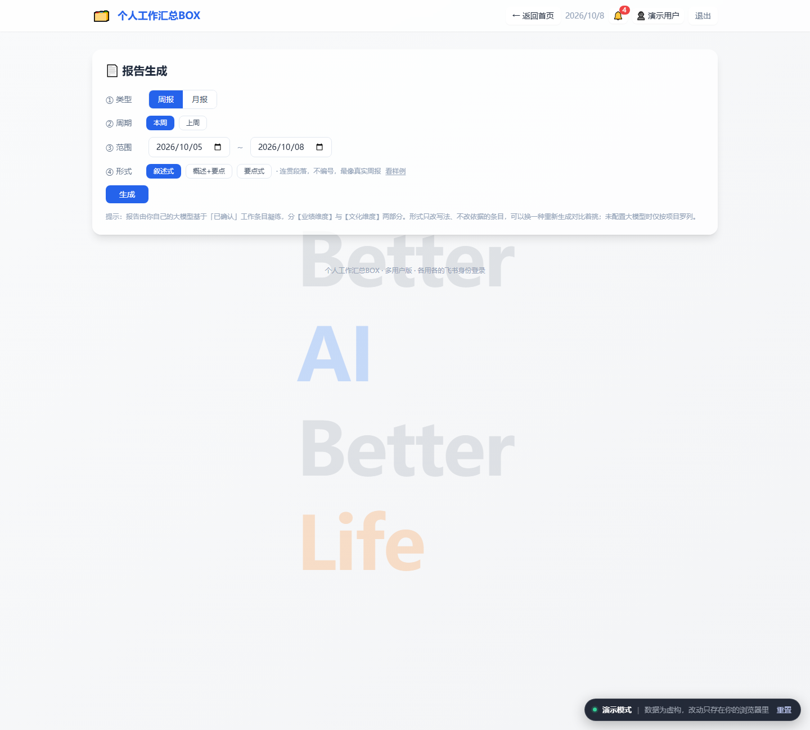
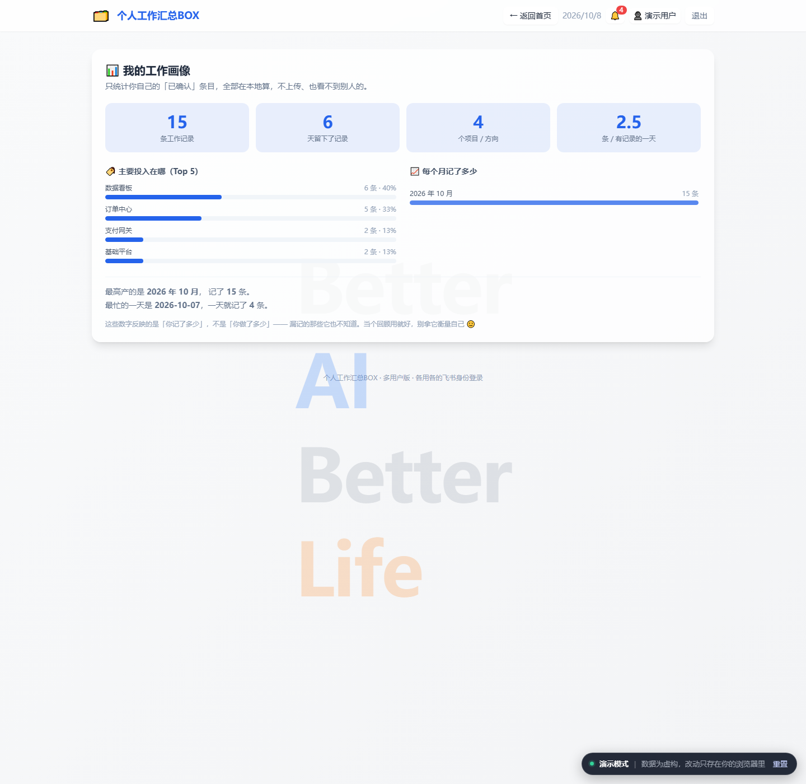

使用教程
个人工作汇总 BOX · 演示站




面向第一次使用的同学：从登录、绑定自己的账户，到抓取、确认、出周报，一步步走完。
- 访问地址：https://ziqi0521.github.io/work-summary-box-demo/
- 建议用电脑浏览器（Chrome / Edge）打开。
- 想先看看长什么样？ 这套工具还有一个公开的演示站（就是上面那条「访问地址」）—— 里面是编造的演示数据、不用登录，确认卡片 / 生成报告 / 反馈墙都能点着玩，适合先摸一遍再上手。演示站上没有任何真实数据，真数据只在你自己的部署里。
第一步：登录（用你自己的飞书）
演示模式下：演示站恒为已登录状态，没有真实的飞书 OAuth。下面这段描述的是线上版的登录方式。
工具用你本人的飞书身份登录，这样抓的、看的都是你自己的消息。
- 打开 https://ziqi0521.github.io/work-summary-box-demo/ ，会看到「登录」页。
- 点 「① 打开飞书授权」 按钮 —— 会新开一个标签页跳到飞书授权页面。
- 在飞书页面点 「同意授权」。授权后浏览器会跳到一个回调地址，地址栏形如：
https://……/feishu_oauth_callback?code=xxxxxxxxxxxx
- 复制这段地址里
code=后面的那串字符（或者直接把整条回调地址复制下来，工具会自动帮你提取 code）。 - 回到工具页面，把它粘进 「② 粘贴授权码」 输入框，点 「登录」。
- 看到右上角显示你的名字，就登录成功了。
会话有效期 30 天，这期间再打开网站不用重新登录。 换电脑也一样：任意任意一台电脑打开地址、用自己的飞书登录，看到的就是你自己的数据。
⭐第二步：绑定你自己的大模型 Key（必做）
演示模式下：演示站不接真的大模型 —— 卡片、报告、实习总结都是预设内容的回放，所以这一步在演示站里不需要做，但下面解释了线上版为什么它是必做项。
工具靠大模型把聊天记录凝练成「一句话工作卡片」。每个人填自己的 Key，各用各的，互不影响。
没配 Key（或 Key 失效、网关不通）时，下面两件事会同时发生： ① 卡片变成聊天原文 —— 退回本地启发式，标题就是从群里截下来的一句话，重复也去不干净； ② 单聊 / 小群 / 别人 @我 的任务一条都抓不到 —— 大模型不可用就直接返回空，不是「少抓几条」，是整块消失。
所以只要你看到「卡片怎么是聊天原文」或者「我单聊里被安排的活怎么没了」，先回来检查这一步。
- 点页头右下角的 「🤖 大模型」。
-
填三项：
-
API Key：你的大模型网关 Key。在平台找：大模型服务商控制台
-
Base URL：网关地址（公司大模型网关
https://api.example-llm.com/v1）。 - 模型名：例如
claude-sonnet-4.6/ 具体的模型标识。 下载过Claude的可以直接在环境变量中找:
-
-
点保存。（Key 保存后只显示打码形式，如
sk-**…；下次只改模型 / 地址、不想重填 Key 也可以，Key 会保持不变。）⚠️ Key 是你的凭证，别截图外发。它只存服务端、只用于你本人的凝练。
第三步：抓取某天的工作
演示模式下：演示站里「开始抓取」跑的是模拟进度，不会真的去读任何聊天记录。
- 进入 「每日工作确认」。
- 选抓取范围： - 当天：默认，最常用。 - 前一天：一键抓昨天（比如第二天早上来补记昨天的工作）。 - 日期范围：补做过去几天时用；可勾「仅工作日」跳过周末。（单次最多 31 天）
- （可选）勾选额外来源（可以同时勾，都靠大模型识别，要先按第二步把 Key 配好）
- 含单聊/小群布置的任务：把别人在单聊、3~4 人小群里布置给你、群里没提过的事也抓成卡片。
- 含 @我的消息：把群里别人 @你、需要你去做的事也抓成卡片。
- 含我写的文档：把你写过的云文档 / 知识库文档（设计方案、调研、复盘这类常常没在群里提过）也算成工作。只看你名下、最后一次由你编辑的，会议自动生成的妙记不算。每次抓取会多花 30~60 秒，而且要已配大模型。
- 点 「立即抓取」。
- 进度条会实时显示：获取会话 → 扫描消息 → 分组 → 大模型凝练。嫌慢可以随时点旁边的「✕ 取消」：已抓到的卡片会保留，没抓的部分不再继续。
- 抓完得到一张张 待确认卡片。
抓完列表会自动切到刚抓的那天；如果看着是空的，先看左上角的日期框是不是停在别的日子。 对同一天重复点抓取不会重复堆卡：旧的「待确认」卡会先清掉，你已确认 / 已忽略的不受影响；而且当天已经确认过的同一件事不会再被重新建一张（措辞变了也认得出）。
第四步：确认与微调卡片
每张卡片有标题、详情、所属项目。逐张处理：
- ✅ 确认：这条算数，纳入后续周报 / 月报。
- ✅ 全部确认 (N)：待确认卡片多、一张张点嫌烦时，列表上方那一行的右端有个 「✅ 全部确认 (N)」 按钮（N 是当前列出的张数），点一下把当前列出的这批一次性全确认（会先弹一句确认）。它只作用于当前列出的那些：「只看当天」就只确认当天，「全部待确认」才是全部；已经忽略过的不会受影响。
- 🗑 忽略：无关的（闲聊、通知等）直接丢弃。忽略过的卡片会被记住，以后重新抓这天也不会再出现。
- ✏️ 编辑：改标题 / 详情 / 项目，让它更准确。
- 漏抓的工作也可以 手动新增 一条（默认就是已确认）。 确定后的卡片会回流到【历史归档】中
历史归档不只是个只读列表，漏记的可以补、写得不准的可以改：
- 右上角 「＋ 添加工作」：补一条漏抓的工作，日期自己挑（默认今天）。
- 每个日期分组标题后面的 「＋」：给那一天补一条，日期已经替你填好了。
- 每张卡片右侧的 ✏️：就地改标题 / 详情 / 项目，不用退回「每日工作确认」。
- 进到某个月之后，右上角还有 「🧹 一键去重」：自动找出同一天里重复记录的工作。先预览再合并 —— 它会列出每一组重复的卡和合并之后的样子，哪组不想合就把勾去掉，确认了才真的动数据。只合并同一天内的，跨天的不碰（跨天合并会整天少掉记录，周报和工作画像都会跟着缺块）。
只有「已确认」的卡片才会进报告，所以这一步是把关关键。
第五步：生成周报 / 月报
- 进入 报告 功能，按 ① 类型 → ② 周期 → ③ 范围 → ④ 形式 的顺序往下选就行。
- 类型：先选周报还是月报 —— 它决定②里给你哪几个快捷周期。
- 周期 / ③ 范围：周报给「本周 / 上周」，月报给「本月 / 上月 / 本考勤周期(25→次月24) / 上一考勤周期」。选完还能在③的两个日期框里手动微调。
- 形式：同一批工作条目、三种写法，按需要挑一种（点「看样例」能看到骨架示意，里面不含任何真实工作内容）：
- 叙述式（默认）：连贯成段，读起来像人写的总结，适合正经交上去的周报 / 月报。
- 提纲式：按小标题分层，结构清楚，适合要在会上过一遍的场合。
- 要点式：短句罗列，最省时间，适合自己留档或同步给组内。
- 换一种重新生成就能对比着挑；依据的工作条目完全一样，只改写法。
- 点 生成。工具把该范围内你已确认的工作按项目方向凝练成报告，过程有进度条，内容会边生成边逐字出现。
- 报告直接就是排版好的效果（不会出现裸
星号）：标题加粗、条目自动编号。想再加工，用报告上方的工具栏：- B 加粗 / U 下划线：先用鼠标选中文字，再点对应按钮。
- 1. 编号列表 / • 项目符号：光标停在那一行，点对应按钮即可。
- 生成完还能 💬 对话改稿：在报告下面展开「对话改稿」，用大白话说哪儿不对（「第二段那个平台名写错了」「问题与反思太虚，结合第 3 条具体点」），大模型会重写全文，然后给你一份逐行对比（绿字新增 / 红字删除）。点「采用」才写回报告，点「放弃」原稿一个字不动；采用之后还能点「撤销这次修改」还原。
- 改稿期间报告会被锁住不能编辑，等它跑完（和生成一样有进度提示）。
- 改稿失败不会动你的稿子 —— 只会提示一句失败原因，原稿原样保留，换个说法再试即可。
- 改稿核对事实用的是生成时那个日期范围的素材，所以生成完再去改日期框，不会影响改稿。
- 点 复制，粘到飞书文档 / Word 里，加粗、下划线、编号会原样保留，直接当周报用。旁边还有 「🎯 复制并去绩效」：一点就把这篇复制走、同时新标签页打开绩效自评，到那边 Ctrl+V 直接粘，格式一样不丢。
⚠️ 要是正文上方出现黄色的「这篇不是大模型写的」提示条，说明这篇只是「按项目罗列」的本地兜底，不是总结。提示条会直接写明真实原因（没配 Key / 调用失败 / 模型只回了空正文），照着那句做再生成一次就行。旁边还给了个 「去 ⚙️ 设置填 Key」 按钮（只在原因确实跟 Key 有关时才出现），一点直接打开大模型设置，不用自己去找。
其他卡片功能
🎓 实习总结 → 简历条目
把入职至今的全部「已确认」工作汇总成一篇实习总结；写完之后，还能再凝练成能直接写进简历的几条。
- 第一次用先填 入职日期（只填一次）。统计范围就是「入职当天 ~ 今天」，不用自己选。日期存在你自己的浏览器里，换电脑要重填一次。
- 两步走：① 生成实习总结（长文）→ ② 凝练成简历条目。两块结果各存各的、互不覆盖；②也是从同一批工作条目里重新凝练，不依赖①的结果，想单独点就单独点。
- ①实习总结分 实习概览 / 主要工作与产出 / 能力与方法沉淀 / 收获与不足 / 后续规划 五块，按月梳理成长脉络，不是流水账。②简历条目按现在互联网求职的写法产出 3~5 条：动词开头、「做了什么 + 怎么做 + 结果」，末尾再给一行能力关键词。
- 跨了好几个月、素材多，生成通常要 1~3 分钟，别急着关页面。
这两块都只知道你记在这里的条目，写不出你私下的那些思考和判断。当初稿用。另外简历条目里的数字只会取自你的工作条目，没有的它不会替你编 —— 量化结果得你自己补。
📊 我的工作画像
看看这段时间的自己：总条目数、覆盖天数、参与项目数、日均产出，加上「主要投入在哪 Top5」和「每个月记了多少」，还会点出你最高产的月份和最忙的一天。
只统计你自己的已确认条目，全部在你的浏览器里算，不上传，也看不到别人的。 它反映的是「你记了多少」，不是「你做了多少」—— 漏记的它也不知道。当个回顾用就好，别拿它衡量自己。
🎯 绩效自评
首页上的一张快捷卡片，点一下新开标签页直达绩效自评主页，不用再自己翻收藏夹。
它只是个入口，不读也不写你的绩效数据。和第五步的 「🎯 复制并去绩效」 配着用最顺：报告生成好 → 点一下 → 到绩效页 Ctrl+V。
🕹️ 像素小鸟
纯摸鱼用的小游戏：点击画面 / 按空格让小鸟起飞、穿过管道得分，越往后越快、缝隙越窄，手机上点屏幕也能玩。
- 右边是 🏆 排行榜，记每人的最高分。
- 上榜身份自己挑：👤 我的账号（显示你的飞书名字）／ 🕶 匿名 ／ ✏️ 自定义名字（最多 12 字）。不想让人知道是你，就选匿名或自己起个名。
- 换身份之后「我的最高」也跟着换 —— 每个身份各记各的分。
个性化设置
- 🎨 主题色 / 标语：右下角可自定义界面颜色和标语。
- 💬 联系作者：有问题找作者。
- 🎁 最近上新：工具每次更新会进站弹一次介绍新功能，叉掉之后在下次更新前不再弹；想回看随时翻首页上方常驻的「最近上新」横条，历史版本都在里面。
- 💡 新功能需求 / 🐛 问题反馈：页面最下方的反馈墙，想要什么功能、遇到什么 bug 都可以写，作者尽快修。每条下面都能回复讨论 —— 所有人都能留言，自己发的回复能删，机主能删任何一条。作者还会给每条标上状态：需求是「待处理 / 处理中 / 已上线」，问题反馈是「待处理 / 处理中 / 已修复」，一眼就能看出自己那条走到哪了。
- 🔔 消息提醒：你提的、或你回复过的那条有了新回复，或者它的状态被改了，右上角就会亮起 🔔 和红点数字。点一下直接跳到那几条，看过就自动记成已读、红点消失。别人之间的对话、以及别人的帖子被改状态，都不会打扰你。
可能遇到的问题
| #### 问题分类 | #### 现象 | #### 可能原因 / 解决方法 |
|---|---|---|
| #### 大模型 #### | 卡片是原文照搬、内容重复 | 没配大模型 Key，或 Key 失效 / 调用失败，凝练这步被跳过，退回本地启发式，标题就是聊天原文。 同时你的单聊 / 小群 / @我 任务也会一条都没有 —— 这两个症状一定是一起出现的。去「🤖 大模型」填好 Key 再重抓即可。 |
| 报告 / 实习总结正文上方出现黄色的「这篇不是大模型写的」 | 说明这篇只是「按项目罗列」的本地兜底，不是总结。提示条后面那句就是真实原因，照着做即可 —— 可能是没配 Key、调用失败，也可能是模型只回了空正文。别一看到黄条就去翻 Key：Key 没问题时它不会让你去翻。另外，中途「改用一次性生成」之类的提示只是换了条路，那篇仍是大模型写的，不会挂黄条。 | |
| 报告 / 实习总结生成时，进度条卡在某一处不动好几分钟 | 多半是正常的：推理型模型（比如 claude-sonnet-4.6）在「思考」阶段一个字都不往外吐，这段静默可以有一两分钟，之后才开始逐字上屏。周报月报最多等 5 分钟、实习总结最多等 7 分钟，超了才会算失败并给你兜底。别在这中间刷新页面。 | |
| 报告写着写着断在半句话上 / 明显比以前短 | 2026-09-22 之前的问题：给模型的输出额度偏小，模型一思考就把额度吃光，轻则正文被截断、重则整篇空白。现在额度已经调大，遇到空正文还会自动加倍额度重试一次。如果还遇到，把时间范围改小再生成一次。 | |
| #### 抓取 | 页面顶部出现琥珀色的「这次抓取降级了，结果不完整」提示条 | 这是工具在提前告诉你：这次的结果不可信。提示条里列了具体原因（绝大多数是大模型 Key 没配好或调用失败）。按提示修好后重抓一次；它要你自己点 × 关掉，不会自动消失，就是怕你没看见。 |
| 抓不到某个群 / 某条消息 | 该会话可能没权限；也可能是那条不是你本人发的 —— 默认只抓你自己发的，别人 @你的要在抓取前勾上「含 @我的消息」。 | |
| 别人在群里 @我 让我做的事没抓到 | 抓取前要勾 「含 @我的消息」，并且配好大模型 Key（没配会跳过，进度里会提示）；另外 @所有人 的广播不算，只认点名 @你 的。 | |
| 一整天没抓到东西 | 那天你可能没在飞书发工作相关消息，或日期选错了。 | |
| 抓完一张卡片都没看到 | 列表只显示日期框里的那一天，先看左上角日期框是不是停在别的日子；另外你之前「忽略」过的卡片不会再出现。 | |
| 勾了「含单聊/小群布置的任务」或「含 @我的消息」却没抓到任务 | 没配大模型 Key（或 Key 失效）时这两部分会直接返回空 —— 不是少抓几条，是整块跳过。页面顶部的琥珀色提示条会写明原因，按它去「🤖 大模型」补好 Key 再重抓；也可能是对方的确没布置事 / 没点名 @你。 | |
| 忽略过的卡片又冒出来了 | 极少见：大模型把同一件事换了个差别很大的说法（连关键名词都换了）时，忽略记忆可能认不出。再忽略一次即可，之后会稳定记住。 | |
| 勾了「含我写的文档」，但没抓到我写的方案 | 飞书搜索按相关性返回，覆盖不保证全；而且只看你名下、最后一次由你编辑的文档，会议自动生成的妙记不算。漏掉的手动补一张卡即可。 | |
| #### 登录·历史 | 同一天出现两张一模一样的已确认卡片 | 2026-09-14 之前的老问题：重抓只清「待确认」，不看当天「已确认」的，所以「抓取→确认→重抓→再确认」会多出一张。现已修复，不会再产生。之前留下的重复卡也不用一张张删了：进【历史归档】点进某个月，右上角有 「🧹 一键去重」，扫出来先给你预览，确认后才合并。 |
| 提示「飞书授权已过期，请重新登录」 | 会话或授权过期，按第一步重新登录一次。 | |
| #### 报告·实习 | 报告生成为空 | 需要先在【每日工作确定】里抓取一下消息，会生成待确定的工作卡片； 确定后这些卡片会流转到【历史归档】； 这时选择【报告生成】才能生成~ |
| 「🎓 实习总结」的生成按钮点不动 | 还没填入职日期。统计范围是按它自动算的，填完按钮就亮了。日期存在你自己的浏览器里，换电脑 / 清过缓存要重填一次。 | |
| 「📊 我的工作画像」是空的 | 画像只看已确认的条目。先去「每日工作确认」确认几条，或在「历史归档」里手动补几条，再回来看。 | |
| 改稿跑完了，但报告看着没变 | 改稿不会自动写回，要先在对比面板里点 「采用」。如果面板提示的是失败（比如网关回了空正文），原稿会原样保留，直接再试一次或换个说法。 |
有其它问题，请使用页面里的「🐛 问题反馈」或直接联系作者。